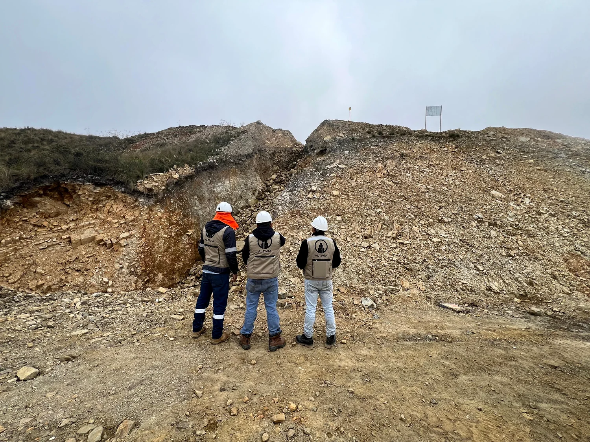
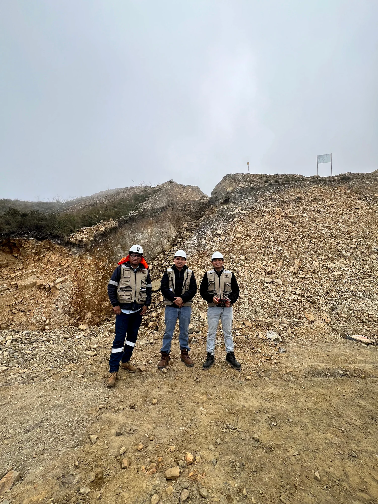
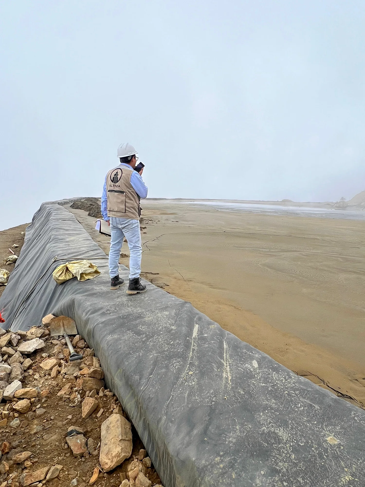
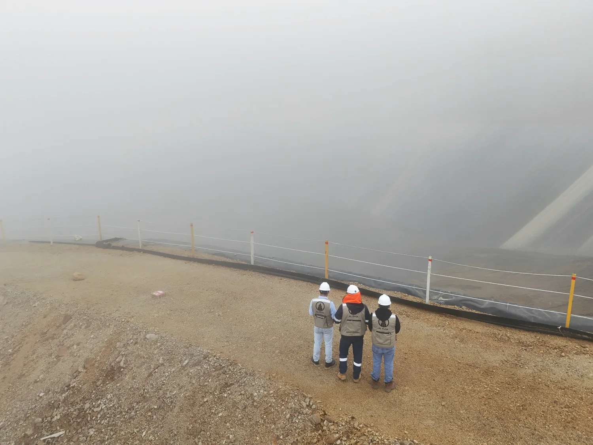

Relaves
RelavesRegistro aéreo de infraestructura minera
04 / Proyectos y experiencias
Registros visuales de reconocimientos y visitas técnicas vinculadas a infraestructura minera y geotecnia.
Portafolio visual
Filtra por especialidad o busca un tema técnico. Selecciona una fotografía para conocer su contexto.
8 registros de experiencia
RelavesRegistro aéreo de infraestructura minera
 Relaves
RelavesRegistro de campo · equipo técnico
 QA/QC
QA/QCSupervisión de obra · instalación

GeotecniaInvestigación de campo · geotecnia

GeotecniaReconocimiento · zonas de alta montaña

QA/QCControl de calidad · campo
 Campo
CampoTrabajo de campo · personal técnico

RelavesInfraestructura minera · campo
Este portafolio es una galería temática basada en fotografías disponibles. Antes de divulgar proyectos, clientes, fechas o resultados específicos, ALTIVIA debe validar su publicación.
Conversemos
Conversemos sobre las condiciones, necesidades y alcances de tu proyecto.
Registro
Actividades relacionadas
Las fotografías representan experiencias de campo. Los alcances y referencias comerciales deberán validarse antes de su difusión pública.
Conversemos